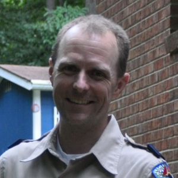
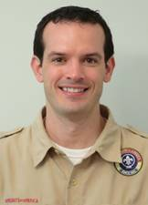

Our Leaders
for the 2017-2018 Scouting yearMouse over any rank below to see the leaders' bios.
Cubmaster
Derek West
 Derek has been attending Chapel Hill Bible Church with his wife LeeAnn and their four children since June 2016. Derek completed Cub Scouts and Boy Scouts, obtaining the Eagle rank in 1992. Derek's favorite thing about scouts is shepherding boys to become men of Godly character. He is an avid outdoorsman spending lots of time in the wilderness with family, friends, and Pack 880. Derek has two sons in the pack, a Wolf and a Bear. Derek is an architect focusing on higher education design and construction.
Derek has been attending Chapel Hill Bible Church with his wife LeeAnn and their four children since June 2016. Derek completed Cub Scouts and Boy Scouts, obtaining the Eagle rank in 1992. Derek's favorite thing about scouts is shepherding boys to become men of Godly character. He is an avid outdoorsman spending lots of time in the wilderness with family, friends, and Pack 880. Derek has two sons in the pack, a Wolf and a Bear. Derek is an architect focusing on higher education design and construction.
Derek West
Derek has been attending Chapel Hill Bible Church with his wife LeeAnn and their four children since June 2016. Derek completed Cub Scouts and Boy Scouts, obtaining the Eagle rank in 1992. Derek's favorite thing about scouts is shepherding boys to become men of Godly character. He is an avid outdoorsman spending lots of time in the wilderness with family, friends, and Pack 880. Derek has two sons in the pack, a Wolf and a Bear. Derek is an architect focusing on higher education design and construction.
Lion (Kindergarten)
Den Leader: Lisa Vook
Den Leader: Lisa Vook
Lisa is very excited to be the Guide for the new Lion Den. She and her husband Eric have 13 years of experience in Cub Scouting to share, having three sons, all of whom are past members of Pack 880. They have been a part of the Bible Church for 25 years, often working in Children's ministry. Lisa has worked as a nurse and is now a full time Mom and part time CPR Instructor.
Tiger (1st Grade)
Den Leader: Derek West
Assistant Den Leader: Dain Anderson
Derek has been attending Chapel Hill Bible Church with his wife LeeAnn and their four children since June 2016. Derek completed Cub Scouts and Boy Scouts, obtaining the Eagle rank in 1992. Derek's favorite thing about scouts is shepherding boys to become men of Godly character. He is an avid outdoorsman spending lots of time in the wilderness with family, friends, and Pack 880. Derek has two sons in the pack, a Wolf and a Bear. Derek is an architect focusing on higher education design and construction.
Den Leader: Derek West
Assistant Den Leader: Dain Anderson
Derek has been attending Chapel Hill Bible Church with his wife LeeAnn and their four children since June 2016. Derek completed Cub Scouts and Boy Scouts, obtaining the Eagle rank in 1992. Derek's favorite thing about scouts is shepherding boys to become men of Godly character. He is an avid outdoorsman spending lots of time in the wilderness with family, friends, and Pack 880. Derek has two sons in the pack, a Wolf and a Bear. Derek is an architect focusing on higher education design and construction.
: ) Dain Anderson is our newest leader, starting in September 2017.
Wolf (2nd Grade)
Den Leader: Alan Kennedy
Assistant Den Leader: Ben August
 Alan is a recent recruit to Cub Scouts. He joined last year as an assistant Tiger Den Leader after his son joined the pack. He and his family attend Chapel Hill Bible Church and his daughter attends American Heritage Girls. His favorite scout activities are outdoor/camp skills.
Alan is a recent recruit to Cub Scouts. He joined last year as an assistant Tiger Den Leader after his son joined the pack. He and his family attend Chapel Hill Bible Church and his daughter attends American Heritage Girls. His favorite scout activities are outdoor/camp skills.
Den Leader: Alan Kennedy
Assistant Den Leader: Ben August
Alan is a recent recruit to Cub Scouts. He joined last year as an assistant Tiger Den Leader after his son joined the pack. He and his family attend Chapel Hill Bible Church and his daughter attends American Heritage Girls. His favorite scout activities are outdoor/camp skills.

Ben started as assistant Wolf Den Leader in August 2017. He has a son in the Wolf Den and a daughter in American Heritage Girls. He and his family have been at CHBC since 2013. An avid cyclist and the resident nerd (he works in IT Services at UNC), his favorite Scouting activities are hiking and Pinewood Derby.
Bear (3rd Grade)
Den Leader: Mark Richardson
 Mark was a leader in the Boy Scout Troop 880 for 11 years as his two sons worked their way from Tenderfoot to Eagle Scout. He became a leader in 2015 when his grandson joined the pack. Mark and his wife Candy have been Bible Church members since 1999. Mark works with Nutrition Services at Duke Hospital. He enjoys gardening, playing the piano, and camping with the Scouts.
Mark was a leader in the Boy Scout Troop 880 for 11 years as his two sons worked their way from Tenderfoot to Eagle Scout. He became a leader in 2015 when his grandson joined the pack. Mark and his wife Candy have been Bible Church members since 1999. Mark works with Nutrition Services at Duke Hospital. He enjoys gardening, playing the piano, and camping with the Scouts.
Den Leader: Mark Richardson
Mark was a leader in the Boy Scout Troop 880 for 11 years as his two sons worked their way from Tenderfoot to Eagle Scout. He became a leader in 2015 when his grandson joined the pack. Mark and his wife Candy have been Bible Church members since 1999. Mark works with Nutrition Services at Duke Hospital. He enjoys gardening, playing the piano, and camping with the Scouts.
Webelos (4th Grade)
Den Leader: Michael Carnahan
Assistant Den Leader: Paul Newman
Den Leader: Michael Carnahan
Assistant Den Leader: Paul Newman

Michael has attended the Bible Church since 2000 and has been a leader in Pack 880 since 2014. He and his wife Ginger have two sons in the pack and a daughter in the American Heritage Girls. Professionally, Michael is VP of R&D for HyperBranch Medical Technology, a medical device company. Michael's favorite scouting activities are visiting the elderly, camping, and the pinewood derby.
: )
Paul Newman is the assistant Den Leader for the Webelos and he has a son in the den.
Arrow of Light (5th Grade)
Den Leader: Chris Kelley
 Chris is an Eagle Scout (1989) and has been a leader in Pack 880 since 2015. He and his wife Ann have been blessed with a son in the Cub Scouts and a daughter in the American Heritage Girls. Chris is the director of The Salvation Army of Lee County. He enjoys golf, fishing and coaching/playing basketball. His favorite scouting activities are camping and pinewood derby. He and his family are members of South Durham Church.
Chris is an Eagle Scout (1989) and has been a leader in Pack 880 since 2015. He and his wife Ann have been blessed with a son in the Cub Scouts and a daughter in the American Heritage Girls. Chris is the director of The Salvation Army of Lee County. He enjoys golf, fishing and coaching/playing basketball. His favorite scouting activities are camping and pinewood derby. He and his family are members of South Durham Church.
Den Leader: Chris Kelley
Chris is an Eagle Scout (1989) and has been a leader in Pack 880 since 2015. He and his wife Ann have been blessed with a son in the Cub Scouts and a daughter in the American Heritage Girls. Chris is the director of The Salvation Army of Lee County. He enjoys golf, fishing and coaching/playing basketball. His favorite scouting activities are camping and pinewood derby. He and his family are members of South Durham Church.
Pack Committee
Chair: Ginger Carnahan
Secretary: Donnie Pulliam
Treasurer: Sascha Tuchman
 Donnie has served as den leader in the past and has a son in the Webelos Den this year. He and his family attend South Durham Church.
Donnie has served as den leader in the past and has a son in the Webelos Den this year. He and his family attend South Durham Church.
 Sascha has served in numerous capacities for the pack over the last several years, most recently as Tiger Den Leader. His son is in the Wolf Den.
Sascha has served in numerous capacities for the pack over the last several years, most recently as Tiger Den Leader. His son is in the Wolf Den.
Chair: Ginger Carnahan
Secretary: Donnie Pulliam
Treasurer: Sascha Tuchman
: )
Ginger has a son in the Wolf Den and also is a leader in the American Heritage Girls troop at AHG.
Donnie has served as den leader in the past and has a son in the Webelos Den this year. He and his family attend South Durham Church.
Sascha has served in numerous capacities for the pack over the last several years, most recently as Tiger Den Leader. His son is in the Wolf Den.